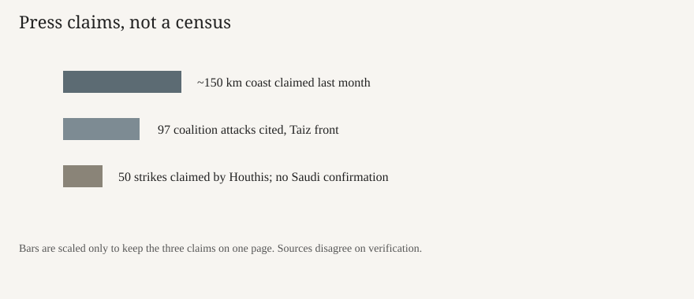

Aden · war · 5 October 2026
Yemen’s recognised government said it was opening a campaign to retake Houthi-held territory

What the desks agree
On Sunday 4 October 2026, Rashad al-Alimi, head of Yemen’s Presidential Leadership Council, said in a televised address that government forces were starting military operations to retake remaining territory held by the Houthis. Reuters, carried by the Japan News, quoted him that the campaign would continue until the country was “liberated from the grip of the terrorist militia,” and that a military spokesman called on the Houthis to lay down weapons. The Guardian quoted a written line that he was announcing operations “to retake the remaining territories of the republic and extend the authority of the state.” Al Jazeera, citing Reuters, said the recognised government later claimed a key district and that fighting had widened since a 2022 truce collapsed in July.
The same cycle of copy records a Houthi claim running the other way. Yahya Saree, a Houthi military spokesman, said the group fired ballistic missiles and drones at Saudi Aramco sites in Riyadh and at Khurais, and that the fires were a response to what the Houthis called 50 Saudi-led strikes in 12 hours. Reuters’ dispatch, as reprinted, says there was no immediate confirmation from Saudi Arabia. That absence is part of the public record on Monday morning. A fire in a wire photo captioned as an alleged strike on a factory in Sanaa is an allegation attached to an image, not a damage assessment.
What is only a quote
Alimi’s “terrorist militia” is the government’s label. The Houthis’ claim of 50 strikes, of large fires at Aramco, and of cutting the last road into Taiz are speaker claims. Military sources told Reuters, via Al Jazeera’s account, that over 48 hours the Houthis had moved onto hilltops near Taiz along the road to Aden. A Saudi-led coalition statement cited in that piece said its forces carried out 97 attacks around Taiz and the Tor al-Baha front. None of those counts is a U.N. census. Just Security’s Monday brief adds that Maj. Gen. Turki al-Maliki said Saudi Arabia would give “full operational support” until the militia was “eliminated.” That is a pledge, not a map of ground taken.
U.S. officials told Axios, in a weekend item summarised by Just Security, that cabinet members discussed the Iran war and the Saudi-Houthi conflict at Camp David on Friday. The meeting is reported. The decisions, if any, are not in a White House transcript scored here. Treating “the war is expanding because Washington decided” as fact would outrun the documents.
The mechanism a reader needs
Yemen’s recognised government sits in Aden and in Riyadh more often than it sits in Sanaa. The Houthis have held the capital since 2014–15. A U.N.-backed truce in 2022 froze the main fronts without a settlement. Al Jazeera dates a renewed round to July 2026 and says more than 100,000 people have been displaced since. Last month, in that account, a Houthi push took about 150 kilometres of Red Sea coast and ground around Bab al-Mandeb, the strait between the Red Sea and the Gulf of Aden. That strait is a shipping choke point. Control of a beach does not equal control of the sea lane, but it changes who can place missiles and drones near the lane.
Saudi Arabia has led a coalition against the Houthis since 2015, paused large ground moves, and absorbed cross-border fire. A recognised-government offensive that asks for Saudi air power is a political fact even before the first district is independently confirmed. Iran’s alignment with the Houthis is the framing used by Reuters and the government; the degree of command on any one launch is not established by Monday’s statements. The United States has forces and a declared interest in Red Sea traffic. That interest does not, by itself, make Sunday’s televised address a U.S. operation.
What this story is not
It is not a confirmed capture of Sanaa. It is not a confirmed hit on Aramco. It is not a count of civilian deaths. The photograph is the Old City in 2013, chosen because it is a dull reusable exterior, not a wreck or a rally. It is not a verdict on the Camp David meeting.


Source articles and scores
| Outlet | Headline | T | N | C |
|---|---|---|---|---|
| Reuters via Japan News | Yemeni Government Launches Offensive to Seize All Areas from Iran-Backed Houthis | 93 | 0 | 88 |
| The Guardian | Yemen’s Saudi-backed government launches military drive to retake all Houthi-held territory | 88 | -8 | 74 |
| Al Jazeera | Yemen war: What’s the latest, as government forces claim advances? | 86 | -6 | 72 |